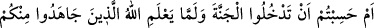
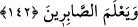

istiyorum, ancak henüz gidermedi.” dedi. Hz. Îsâ:
– “İhtiyacın nedir?” diye sorunca, Âbid:
– “Allah’ın, kendi sevgi ve mârifetinin bir zerresini kalbime yerleştirmesini
istiyorum, ama yapmıyor. Sen O’nun peygamberisin, bunu benim için istesen.” dedi.
Hz. Îsâ, o pınarda abdest alıp iki rekat namaz kıldı ve o adamın ihtiyacını gidermesi
için Allah’a duâ etti. Sonra oradan ayrıldı. Gittiği yerde ne kadar vakit geçirdiyse
geçirdikten sonra buraya tekrar geldiğinde buranın boşalmış; pınarın kurumuş, bostanın
da harâb olmuş olduğunu gördü ve:
– “Yâ Rab” dedi. “Ben ona muhabbet ve mârifetini ihsan etmeni istedim. Sen ise onun
ruhunu kabzetmişsin?” Allah Teâlâ Îsâ (a.s.)’a şöyle vahyetti:
– “Yâ Îsâ, sen bilmiyor musun ki dünyanın harâb olması benim mârifet ve
muhabbetime dâhildir. Beni bilip, sevenler ancak benimle birlikte olurlar, benden başka
bir yerde yerleşip karar kılamazlar. Eğer bu adamı merak ediyorsan, şu vadiye doğru
git.” buyurdu.
Hz. Îsâ o vadiye vardığında bir de baktı ki adamcağız, dili bir karış dışarıda etrafında
olup biten her şeyden habersiz gözlerini semâya doğru dikmiş bir vaziyette donakalmış
öyle oturuyor. Hz. Îsâ, âbide seslendi ama adam bir şey duymadı. Tekrar seslendi ve
adamı şöyle bir sarstı. Adam yine hissetmedi. O esnâda Allah Teâlâ, Îsâ (a.s.)’a şöyle
vahyetti:
“İzzet ve celâlim hakkı için, kılıçla ikiye bölseydin bile hissetmezdi. Çünkü, ben onun
kalbine muhabbet ve mârifetimi yerleştirdim. Hem de zerreden çok daha az bir miktar
muhabbet ve mârifet... Eğer bunu biraz daha artırmış olsaydım yerle gök arasında
uçardı.”
Ehlullah’a bak, dünyaları nasıl harâb olmuş, başları belâdan kurtulmuyor. Ey kul, işte
sen de dînini dosdoğru yaşamaya böyle çalış ki yakîn ve temkîn makamına ulaşabilesin.
Çünkü mücâhede, müşâhedeye götürür.
Şehvetine tapan nefse itâat etme!
Her saat kıble değiştiren nefsin arkasından gitme!
142. Yoksa Allah içinizden cihad edenleri belli etmeden, sabredenleri ortaya
çıkarmadan cennete gireceğinizi mi sandınız?
Âyetteki muhâtap, Uhud’da hezimete uğrayanlardır. Allah, içinizde cihad edenleri ve
sabredenleri sınayıp bilmeden cennete girip nimetlerine erişeceğinizi mi sandınız?
buyurmaktadır.